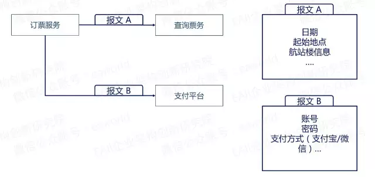

转载本文需注明出处：微信公众号EAWorld，违者必究。
随着微服务的概念逐渐被人们接受，大家都在努力将自己的应用系统向微服务框架转型。在我们研发微服务框架的时候，就发现随着服务数量的增多，服务接口定义就需要一套统一数据标准来支撑；在对服务接口做实参的时候，频繁的且重复性的赋值让人很抓狂。本文将阐明我们面临这些问题是如何解决的。
本文目录：
一、什么是报文
二、报文为什么需要规范
三、常规的报文规范
四、微服务下的报文规范面临的问题
五、元数据驱动的微服务报文
六、技术实践
报文(message)是网络中交换与传输的数据单元，即站点一次性要发送的完整数据信息的数据块。

上面的例子可能不符合实际业务场景，只是为了举例说明。当你要预订一张机票的时候，需要向航空公司查询票务，也需要向支付机构支付票款。在每个服务之间，需要进行信息的传递和交互，这个交互信息，就是报文。
报文包含完整的数据信息，如上述报文A中的日期、地点等，或者如报文B的账号、密码等。这些信息字段都具有各自的字段属性，比如日期是年-月-日，密码长度6，需要字母和数字混合等。
这些字段属性在个人开发的场景下，字段的信息定义都是可以由自己决定，只要记忆不出现错误，信息传递也没什么问题。如果涉及协作开发，就必须在报文的格式上制订出大家共同遵守的规范，否则在应用之间将无法达成数据的通讯和交互。


上面两幅图能很形象的反映出问题的关键，协作模式中报文规范至关重要，是服务开发的基础。
在协作开发模式下，经常会见到报文接口规范描述文档。如银联接口：

上图银联接口截取自《中国银联银行卡联网联合技术规范V2.1-报文接口规范》
如某银行接口：

我们能发现不管是企业间还是企业内部的报文规范，大家都采用同样的方式或者说类似的方式来解决报文接口数据标准的问题。通过文档描述报文接口规范，依赖强管控能力强制执行。
在微服务的大趋势下，系统出现形式不再以应用为单位了，最终形态将会是一个一个微小服务了。

处理相同的事情，在微服务架构下服务被拆分成多个小粒度的微服务了，报文的个数随着服务的拆分而成指数增长。
传统模式关心的是系统与系统或者说应用与应用之前的交互，通过几个文档描述就能够解决问题；而在微服务架构下，还继续通过文档的方式去描述报文规范，我相信程序猿们肯定会崩溃。

有过分布式服务框架（如dubbo）使用经验的朋友可能会想，服务接口都是通过java interface定义，参数都是java bean的，拿到接口就能开发了呀，谁还关心这样的规范啊？

上图代码是个简单的用户注册接口，通过该接口在团队内部的的确可以快速的开发，但是如果跨团队协作的情况就不那么乐观了。
图中接口里的loginName没有约定诸如是否允许中文，最大长度不能超过20，不能有特殊字符等等； password也没有约定诸如是否必须包含大小写及数字，长度为6-18等等。这些关键的信息缺失之后，我们协作开发就比较困难了，甚至会遇到在开发期和测试期都不出现问题，等到上了生产就会出现各种奇葩的问题了。
再来看一个服务实现的例子：

上图代码是一个注册接口的具体实现，主要完成了几个事情：申请开通Jira、Git同时向数据库添加一条记录。为了完成这三件事情，给参数赋值的代码就写了6行，如果参数字段多达十几个甚至几十个的时候，我相信程序猿一样会奔溃。
解决这种繁琐的赋值操作办法还是有很多的，比如将所有的java bean中相同属性定义同样的名字，然后利用java反射机制写一个通用的赋值工具类，将相同属性进行值拷贝。
但是在微服务架构下，服务就是最小的开发粒度，无法控制所有程序猿对变量名的定义都统一，这又是一个让人头痛的问题。
上面提到了微服务架构下报文面临着接口规范定义及方便使用的问题，通过元数据如何解决这些问题呢？
既然报文结构规范定义是个问题，那就从规范入手解决。常规方式是通过文档描述规范通过强管控实施，因为word或者excel文档对程序猿不够友好，所以数量过多才会让程序猿崩溃，从这点入手，将文档描述的格式换成对程序猿友好的格式（如xml、yaml等）是否会好一点呢？

如上图，将word文档或者excel管理的规范数据标准，转为yaml格式定义及保存，通过yaml工具将yaml编译成Java Bean并提交资源管理库，在开发阶段，通过maven依赖将需要的元数据依赖进自己的项目。
使用元数据的时候，通过注解的方式关联到服务接口上，如下图：

在之前的用户注册的服务接口上我们添加@DataDict的注解，从注解的内容能够看出是将接口规范与接口参数绑定了，再通过编码规范检查工具（如Checkstyle）就能够通过技术手段去管控报文规范的使用。
在服务接口上已经添加了@DataDict的注解，采用常规方法，通过反射机制写一个通用赋值工具，通过相同@DataDict去mapping，这样赋值的繁琐事情也就完成了。
上面已经将解决问题的关键技术和思路说清楚了，下面来看看这些在普元微服务平台中具体实践。

我们在元数据定义的部分提供了元数据管理平台，在管理平台中通过配置界面去定义报文规范，并提交元数据到集成编译环境，集成编译环境会将元数据编译成Java Bean提交资源管理库。这里强调元数据管理平台的目的是为了统一元数据的定义入口，方便企业管控。
服务接口添加注解的操作上，我们采取可视化编辑自动生成的方式。如下图：


参数赋值的操作上，我们同样采取可视化编辑自动生成的方式。如下图：

我们通过统一的开发平台将coding行为转变成可视化编辑行为来简化开发，并且做到规范约束。
本文介绍了报文的规范由来，以及微服务下报文规范面临的问题：
其一是，手工的规范文档无法在开发阶段形成规范的落实，
其次是，由于微服务架构产生的繁琐的赋值操作需求。
解决方案有几个要点：
一是将手工文档固化为可以与开发环境结合的YAML等格式文档，形成开发环境可识别的元数据。
二是通过借助工具引擎来进行基于注解的报文解析，形成报文、服务与元数据的绑定,简化和自动化赋值操作。
如需成为EAii架构研究院会员加入微信群参与架构设计与讨论直播，享受微课堂PPT抢先下载等权益，请直接在本文底部留言您的微信号。
关于作者：
姚重阳
普元解决方方案中心架构师，6年金融行业软件产品研发工作，目前主要负责解决方案中心的产品维护和技术售前。

关于EAWorld
微服务，DevOps，元数据，企业架构原创技术分享，EAii（Enterprise Architecture Innovation Institute）企业架构创新研究院旗下官方微信公众号。
微信号：eaworld，长按二维码关注